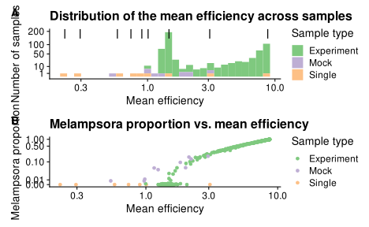

Analysis of bias in Leopold and Busby (2020).
# Tools for microbiome data
library(speedyseq)
# Tools for general purpose data manipulation and plotting
library(tidyverse)
# ggplot helpers
library(ggbeeswarm)
library(cowplot)
library(patchwork)
theme_set(theme_cowplot())
# stats helpers
library(broom)
library(metacal); packageVersion("metacal")
[1] '0.2.0'ps.mock.pseudo <- ps.mock %>%
transform_sample_counts(function(x) x + 1)
mc_fit <- estimate_bias(ps.mock.pseudo, mock_actual, boot = TRUE) %>% print
A metacal bias fit.
Estimated relative efficiencies:
Melampsora Dioszegia Epicoccum Fusarium Penicillium
8.7486819 0.2947290 1.0064648 3.0660596 0.2233792
Cladosporium Trichoderma Alternaria Aureobasidium
0.8988898 0.5776648 1.4679841 0.7380894
Contains 1000 bootstrap replicates.bias <- coef(mc_fit) %>% print
Melampsora Dioszegia Epicoccum Fusarium Penicillium
8.7486819 0.2947290 1.0064648 3.0660596 0.2233792
Cladosporium Trichoderma Alternaria Aureobasidium
0.8988898 0.5776648 1.4679841 0.7380894 Summary of a metacal bias fit.
Estimated relative efficiencies:
# A tibble: 9 x 4
taxon estimate gm_mean gm_se
<chr> <dbl> <dbl> <dbl>
1 Melampsora 8.75 8.76 1.06
2 Dioszegia 0.295 0.295 1.10
3 Epicoccum 1.01 0.995 1.50
4 Fusarium 3.07 3.08 1.14
5 Penicillium 0.223 0.224 1.09
6 Cladosporium 0.899 0.903 1.13
7 Trichoderma 0.578 0.579 1.09
8 Alternaria 1.47 1.46 1.08
9 Aureobasidium 0.738 0.736 1.12
Geometric standard error estimated from 1000 bootstrap replicates.coef_tb <- mc_fit.summary$coefficients
coef_tb %>%
mutate(taxon = fct_reorder(taxon, estimate)) %>%
ggplot(aes(taxon, estimate,
ymin = estimate / gm_se^2, ymax = estimate * gm_se^2)) +
geom_hline(yintercept = 1, color = "grey") +
geom_pointrange() +
scale_y_log10() +
coord_flip()
ps.pseudo <- transform_sample_counts(ps, function(x) x + 1)
ps.pseudo.cal <- calibrate(ps.pseudo, bias) %>% print
phyloseq-class experiment-level object
otu_table() OTU Table: [ 9 taxa and 567 samples ]:
sample_data() Sample Data: [ 567 samples by 16 sample variables ]:
tax_table() Taxonomy Table: [ 9 taxa by 7 taxonomic ranks ]:
refseq() DNAStringSet: [ 9 reference sequences ]
taxa are columnsTo estimate the SMRE with formula sum_i A_i E_i, use the calibrated abundances.
ps0 <- ps.pseudo.cal %>%
prune_taxa(names(bias), .)
otu <- ps0 %>% otu_table %>% orient_taxa(as = "cols") %>%
transform_sample_counts(close_elts)
sam0 <- sample_data(ps0) %>%
as("data.frame") %>%
as_tibble(rownames = "Sample")
sme <- otu %>% psmelt %>%
left_join(bias %>% enframe("OTU", "Efficiency"), by = "OTU") %>%
group_by(Sample) %>%
summarize(SMRE = sum(Efficiency * Abundance)) %>%
left_join(sam0, by = "Sample") %>%
mutate(
across(Timepoint, as.factor),
across(Timepoint, fct_explicit_na, "Other"),
)
p1 <- ggplot(sme, aes(SMRE, fill = Samp_type)) +
geom_histogram() +
annotate("point", y = 200, x = bias, color = "black", shape = "|", size = 7) +
scale_x_log10() +
scale_y_sqrt(breaks = c(1, 10, 50, 100, 200)) +
expand_limits(x = range(bias)) +
scale_fill_brewer(type = "qual") +
labs(
# x = "Sample mean relative efficiency (SMRE)",
x = "Mean efficiency",
y = "Number of samples",
fill = "Sample type"
)
p1 +
plot_annotation(
title = "Distribution of sample mean relative efficiencies",
)
ggsave("/tmp/leopold2020host-smre-distribution.svg", units = "in",
width = 6, height = 3, scale = 1.5)
ggsave("/tmp/leopold2020host-smre-distribution.png", units = "in",
width = 6, height = 3, scale = 1.5)
In this case, the bimodal distribution is likely driven by the high proportion of Melampsora (pathogen) in ~half the samples.
TODO: check this hypothesis. by making a histogram of melampspora %, and a scatterplot of the melamspora vs.SMRE. Can do with facet matrix from ggforce
mel <- otu %>%
prune_taxa("Melampsora", .) %>%
psmelt %>%
select(-OTU, Melampsora = Abundance)
sme0 <- left_join(sme, mel, by = "Sample")
# p2 <- ggplot(sme0, aes(SMRE, fill = Melampsora)) +
p2 <- ggplot(sme0, aes(y = Melampsora, x = SMRE, color = Samp_type)) +
geom_point() +
# annotate("point", y = 1, x = bias, color = "black", shape = "|", size = 7) +
scale_x_log10() +
# scale_y_sqrt() +
scale_y_continuous(
trans = scales::pseudo_log_trans(sigma = 1e-2),
breaks = c(0, 0.01, 0.1, 0.5, 1)
) +
expand_limits(x = range(bias)) +
scale_color_brewer(type = "qual") +
labs(
y = "Melampsora proportion",
# x = "Sample mean relative efficiency (SMRE)",
x = "Mean efficiency",
color = "Sample type"
)
p2
(p1 + ggtitle("Distribution of the mean efficiency across samples")) /
(p2 + ggtitle("Melampsora proportion vs. mean efficiency")) +
plot_annotation(tag_levels = "A")

ggsave("/tmp/leopold2020host-smre-distribution.svg", units = "in",
width = 6, height = 6, scale = 1.5)
ggsave("/tmp/leopold2020host-smre-distribution.pdf", units = "in",
width = 6, height = 6, scale = 1.5)
ggsave("/tmp/leopold2020host-smre-distribution.png", units = "in",
width = 6, height = 6, scale = 1.5)
Note, the high-Mel samples are the timepoint 2 samples, and were not used for some (all?) of his analysis due to the dominance of Mel. Lets check this out,
sme %>%
mutate(
across(Timepoint, as.factor),
across(Timepoint, fct_explicit_na, "Other"),
) %>%
# filter(Samp_type == "Experiment") %>%
ggplot(aes(SMRE, fill = Timepoint)) +
geom_histogram() +
annotate("point", y = 200, x = bias, color = "black", shape = "|", size = 7) +
scale_x_log10() +
scale_y_sqrt(breaks = c(1, 10, 50, 100, 200)) +
expand_limits(x = range(bias)) +
scale_fill_brewer(type = "qual") +
labs(
x = "Mean efficiency",
y = "Number of samples"
)
sme %>%
filter(Samp_type == "Experiment", Treatment != "Negative") %>%
ggplot(aes(SMRE, fill = Region)) +
geom_histogram() +
scale_x_log10() +
scale_y_sqrt(breaks = c(1, 10, 50, 100, 200)) +
scale_fill_brewer(type = "qual") +
labs(
x = "Mean efficiency",
y = "Number of samples"
) +
facet_wrap(~Timepoint, ncol = 1)
Can see that Eastern genotypes more susceptible (more Mel and higher SME)
Are some western genotypes less susceptible?
sme %>%
filter(Samp_type == "Experiment", Region == "West",
Treatment != "Negative") %>%
ggplot(aes(SMRE, fill = Genotype)) +
geom_histogram() +
scale_x_log10() +
scale_y_sqrt(breaks = c(1, 10, 50, 100, 200)) +
scale_fill_brewer(type = "qual") +
labs(
x = "Mean efficiency",
y = "Number of samples"
) +
facet_wrap(~Timepoint, ncol = 1)
Eastern?
sme %>%
filter(Samp_type == "Experiment", Region == "East",
Treatment != "Negative") %>%
ggplot(aes(SMRE, fill = Genotype)) +
geom_histogram() +
scale_x_log10() +
scale_y_sqrt(breaks = c(1, 10, 50, 100, 200)) +
scale_fill_brewer(type = "qual") +
labs(
x = "Mean efficiency",
y = "Number of samples"
) +
facet_wrap(~Timepoint, ncol = 1)
Might be better to just focus on the treated experimental samples; can note that the bimodal distribution in SMRE is due to the presence of Mel in the timepoint 2, and thus wed mess up our AA inferences if we tried to infer the change in AA after Mel introduction. We might also (if were were analyzing timepoint 2 samples)
Actually, including the bias values serves the important purpose of showing how the SME varies less than the efficiencies. For that reason it could even be worth having the single-isolate samples, though seems unneeded.
Points
p1.1 <- sme %>%
filter(Samp_type == "Experiment", Treatment != "Negative") %>%
ggplot(aes(SMRE, fill = Timepoint)) +
geom_histogram() +
annotate("point", y = 200, x = bias, color = "black", shape = "|", size = 7) +
expand_limits(x = range(bias)) +
scale_x_log10() +
scale_y_sqrt(breaks = c(1, 10, 50, 100, 200)) +
scale_fill_brewer(type = "qual") +
labs(
# x = "Sample mean relative efficiency (SMRE)",
x = "Mean efficiency",
y = "Number of samples"
)
p2.1 <- sme0 %>%
filter(Samp_type == "Experiment", Treatment != "Negative") %>%
ggplot(aes(y = Melampsora, x = SMRE, color = Timepoint)) +
geom_point() +
expand_limits(x = range(bias)) +
scale_x_log10() +
# scale_y_sqrt() +
scale_y_continuous(
trans = scales::pseudo_log_trans(sigma = 1e-2),
breaks = c(0, 0.01, 0.1, 0.5, 1)
) +
scale_color_brewer(type = "qual") +
labs(
y = "Melampsora proportion",
x = "Mean efficiency"
)
(p1.1 + ggtitle("Distribution of the mean efficiency across samples")) /
(p2.1 + ggtitle("Melampsora proportion vs. mean efficiency")) +
plot_annotation(tag_levels = "A")
TODO: Still need to determien if the y axis is accurate on histogram; I think its off when using pseudo-log. But perhaps can get away with linear?
We can use this distribution to pick examples of samples where bias approximately cancels in the FC estimates (because their SMREs are similar), and samples where bias does not approximately cancel (because their SMREs are very different). Could do for mock samples (using the ground truth) or for natural samples (using the calibrated composition). Might as well do it both ways; not sure which would be best for a paper. The mocks have the benefit of knowing the ground truth, while the natural samples demonstrate practical significance. Also, we can give nice intuitive description of what were doing in the natural samples by saying that were comparing samples w/ low-low, high-high, or low-high pathogen %.
TODO ^^
To pick from the mock samples:
sme0 %>%
filter(Samp_type == "Mock") %>%
select(Sample, SMRE, Melampsora) %>%
arrange(SMRE) %>%
mutate(
log10_SMRE = log10(SMRE),
diff = c(NA, diff(log10_SMRE))
)
# A tibble: 10 x 5
Sample SMRE Melampsora log10_SMRE diff
<chr> <dbl> <dbl> <dbl> <dbl>
1 Mock.3 0.541 0.00782 -0.267 NA
2 Mock.7 0.970 0.00761 -0.0132 0.254
3 Mock.9 0.981 0.0116 -0.00824 0.00492
4 Mock.2 1.16 0.0524 0.0628 0.0711
5 Mock.6 1.24 0.0435 0.0931 0.0303
6 Mock.10 1.82 0.0948 0.261 0.168
7 Mock.1 2.00 0.0540 0.301 0.0400
8 Mock.4 2.12 0.164 0.327 0.0256
9 Mock.8 2.20 0.134 0.343 0.0161
10 Mock.5 2.96 0.179 0.472 0.129 Next: Compute the actual and observed FC in proportions, for each of these pairs of communities. Perhaps define a function to spit out the relevant data frame, given any pair of samples, the phyloseq object (or calibrated phyloseq object?), and the bias vector? Actually, for the mocks, should use the actual table instead of calibrated.
Use these objects,
mock_actual
OTU Table: [ 9 taxa and 10 samples ]:
Taxa are columns
Melampsora Dioszegia Epicoccum Fusarium Penicillium
Mock.1 0.0538 0.0108 0.0108 0.269 0.0108
Mock.2 0.0538 0.269 0.269 0.0108 0.0108
Mock.3 0.0108 0.269 0.0538 0.0108 0.269
Mock.4 0.269 0.0538 0.0108 0.0538 0.269
Mock.5 0.269 0.0108 0.0108 0.269 0.0538
Mock.6 0.0538 0.0538 0.0538 0.0108 0.0108
Mock.7 0.0108 0.269 0.0538 0.269 0.269
Mock.8 0.269 0.0108 0.269 0.0538 0.0538
Mock.9 0.0108 0.0538 0.269 0.0538 0.0538
Mock.10 0.111 0.111 0.111 0.111 0.111
# with 4 more taxa (columns)ps.mock.pseudo
phyloseq-class experiment-level object
otu_table() OTU Table: [ 9 taxa and 10 samples ]:
sample_data() Sample Data: [ 10 samples by 16 sample variables ]:
tax_table() Taxonomy Table: [ 9 taxa by 7 taxonomic ranks ]:
refseq() DNAStringSet: [ 9 reference sequences ]
taxa are columnsWe can use metacal::pairwise_ratios() to compute the FCs in abundances between all samples + for all taxa, given a phyloseq object.
fcs <- list(Actual = mock_actual, Observed = ps.mock.pseudo) %>%
map(transform_sample_counts, close_elts) %>%
map(pairwise_ratios, margin = "samples", filter = FALSE) %>%
map_dfr(psmelt, .id = "Type") %>%
# redo sample.1 and sample.2 since missing for the mock
select(-sample.1, -sample.2) %>%
rename(Pair = Sample, Fold_change = Abundance) %>%
separate(Pair, str_c("Sample.", 1:2), sep = ":", remove = FALSE) %>%
mutate(across(OTU, factor, levels = bias %>% sort %>% names)) %>%
left_join(sme0 %>% select(Sample.1 = Sample, SMRE, Melampsora),
by = "Sample.1") %>%
left_join(sme0 %>% select(Sample.2 = Sample, SMRE, Melampsora),
by = "Sample.2", suffix = c(".1", ".2"))
fcs %>%
filter(Pair %in% c("Mock.5:Mock.3", "Mock.9:Mock.7")) %>%
ggplot(aes(y = OTU, x = Fold_change, shape = Type, color = Type)) +
facet_grid(. ~ Pair) +
scale_shape_manual(values = c(Actual = 3, Observed = 1)) +
scale_color_brewer(type = "qual", palette = 6) +
geom_vline(xintercept = 1, color = "black", size = 0.2) +
geom_point(size = 2) +
theme_minimal_hgrid() +
scale_x_log10(limits = c(3e-3, 1e2), oob = scales::squish) +
labs(x = "Fold change in proportion") +
plot_annotation(
title = "Actual and observed fold changes between pairs of mocks"
)
ggsave("/tmp/leopold2020-fc-mock-examples.png", units = "in",
width = 6, height = 3, scale = 1.5)
Can see that on the left, the error is positive for all taxa, and of a similar magnitude (on the order of ~6X, as predicted) for all taxa except for Epicoccum, which dropped out during sequencing in Mock.5; and on the right, the error is smaller and not consistently positive or negative. Sign errors correspond to the observed and actual fold changes being on opposing sides of the vertical red line at 1.
todo: add the SMRE changes to the facet labels, and perhaps mark the expected
What other types of plots, which might use all pairs of samples?
we could plot the observed vs.predicted error
we could check that the error really is taxon independent; one way to do this is to calc the correlation in LFC between observed and actual
lvls <- sme0 %>% arrange(SMRE) %>% pull(Sample)
fcs0 <- fcs %>%
# filter(Sample.1 < Sample.2) %>%
select(Type:Fold_change, SMRE.1:Melampsora.2) %>%
pivot_wider(names_from = Type, values_from = Fold_change) %>%
mutate(across(c(Sample.1, Sample.2), factor, levels = lvls))
fcs0 %>%
filter(as.integer(Sample.1) < as.integer(Sample.2)) %>%
ggplot(aes(Actual, Observed, color = OTU)) +
geom_abline(color = "grey") +
geom_point() +
scale_x_log10() +
scale_y_log10() +
facet_grid(Sample.1 ~ Sample.2) +
scale_color_brewer(type = "qual", palette = 3)
Note how (especially) for Mock 1 and 6, the points follow a straight line with a greater slope than predicted. This seems likely related to the systematic deviation from the model that I observed.
Check that there is indeed very high correlations; remove the Epicoccum Mock-5 dropout first to avoid major distortions just from that.
corrs <- fcs0 %>%
filter(
Sample.1 != Sample.2,
!((Sample.1 == "Mock.5" | Sample.2 == "Mock.5") & OTU == "Epicoccum")
) %>%
mutate(across(c(Actual, Observed), log10)) %>%
group_by(Pair) %>%
summarize(correlation = cor(Actual, Observed, method = "pearson"))
corrs %>% pull(correlation) %>% summary
Min. 1st Qu. Median Mean 3rd Qu. Max.
0.9637 0.9827 0.9894 0.9874 0.9929 0.9989 # qplot(corrs$correlation)
We could just try picking a high and low Melampsora sample - perhaps from the mode of the peaks, rather than the extreme.
sme0 %>%
filter(Samp_type == "Experiment") %>%
select(Sample, SMRE, Melampsora) %>%
arrange(SMRE) %>%
mutate(
log10_SMRE = log10(SMRE),
diff = c(NA, diff(log10_SMRE))
)
# A tibble: 548 x 5
Sample SMRE Melampsora log10_SMRE diff
<chr> <dbl> <dbl> <dbl> <dbl>
1 G12.T6.R4.TP1 0.996 0.00182 -0.00185 NA
2 G1.T5.R2.TP1 1.24 0.0000218 0.0939 0.0958
3 G11.T2.R4.TP1 1.24 0.0000836 0.0951 0.00114
4 G12.T1.R2.TP1 1.28 0.0000166 0.108 0.0128
5 G12.T2.R4.TP1 1.28 0.0000309 0.108 0.000619
6 G11.T3.R3.TP1 1.29 0.000253 0.110 0.00119
7 G2.T2.R4.TP1 1.29 0.0000220 0.110 0.000570
8 G8.T4.R1.TP1 1.29 0.0000132 0.110 0.0000354
9 G9.T5.R3.TP1 1.29 0.0000714 0.110 0.000185
10 G4.T6.R3.TP1 1.29 0.000197 0.112 0.00139
# with 538 more rowssessioninfo::session_info()
Session info
setting value
version R version 4.0.5 (2021-03-31)
os Arch Linux
system x86_64, linux-gnu
ui X11
language (EN)
collate en_US.UTF-8
ctype en_US.UTF-8
tz America/New_York
date 2021-04-21
Packages
package * version date lib source
ade4 1.7-16 2020-10-28 [1] CRAN (R 4.0.3)
ape 5.4-1 2020-08-13 [1] CRAN (R 4.0.2)
assertthat 0.2.1 2019-03-21 [1] CRAN (R 4.0.0)
backports 1.2.1 2020-12-09 [1] CRAN (R 4.0.3)
beeswarm 0.3.1 2021-03-07 [1] CRAN (R 4.0.5)
Biobase 2.50.0 2020-10-27 [1] Bioconductor
BiocGenerics 0.36.0 2020-10-27 [1] Bioconductor
biomformat 1.18.0 2020-10-27 [1] Bioconductor
Biostrings 2.58.0 2020-10-27 [1] Bioconductor
broom 0.7.6 2021-04-05 [1] CRAN (R 4.0.5)
bslib 0.2.4 2021-01-25 [1] CRAN (R 4.0.4)
cellranger 1.1.0 2016-07-27 [1] CRAN (R 4.0.0)
cli 2.4.0 2021-04-05 [1] CRAN (R 4.0.5)
cluster 2.1.1 2021-02-14 [2] CRAN (R 4.0.5)
codetools 0.2-18 2020-11-04 [2] CRAN (R 4.0.5)
colorspace 2.0-0 2020-11-11 [1] CRAN (R 4.0.3)
cowplot * 1.1.1 2020-12-30 [1] CRAN (R 4.0.4)
crayon 1.4.1 2021-02-08 [1] CRAN (R 4.0.4)
data.table 1.14.0 2021-02-21 [1] CRAN (R 4.0.4)
DBI 1.1.1 2021-01-15 [1] CRAN (R 4.0.4)
dbplyr 2.1.1 2021-04-06 [1] CRAN (R 4.0.5)
digest 0.6.27 2020-10-24 [1] CRAN (R 4.0.3)
distill 1.2.4 2021-04-05 [1] Github (rstudio/distill@3ec93f1)
downlit 0.2.1 2020-11-04 [1] CRAN (R 4.0.3)
dplyr * 1.0.5 2021-03-05 [1] CRAN (R 4.0.4)
ellipsis 0.3.1 2020-05-15 [1] CRAN (R 4.0.0)
evaluate 0.14 2019-05-28 [1] CRAN (R 4.0.0)
fansi 0.4.2 2021-01-15 [1] CRAN (R 4.0.3)
farver 2.1.0 2021-02-28 [1] CRAN (R 4.0.4)
forcats * 0.5.1 2021-01-27 [1] CRAN (R 4.0.4)
foreach 1.5.1 2020-10-15 [1] CRAN (R 4.0.3)
fs 1.5.0 2020-07-31 [1] CRAN (R 4.0.2)
generics 0.1.0 2020-10-31 [1] CRAN (R 4.0.3)
ggbeeswarm * 0.6.0 2017-08-07 [1] CRAN (R 4.0.0)
ggplot2 * 3.3.3 2020-12-30 [1] CRAN (R 4.0.4)
glue 1.4.2 2020-08-27 [1] CRAN (R 4.0.2)
gtable 0.3.0 2019-03-25 [1] CRAN (R 4.0.0)
haven 2.3.1 2020-06-01 [1] CRAN (R 4.0.1)
here 1.0.1 2020-12-13 [1] CRAN (R 4.0.3)
highr 0.8 2019-03-20 [1] CRAN (R 4.0.0)
hms 1.0.0 2021-01-13 [1] CRAN (R 4.0.4)
htmltools 0.5.1.1 2021-01-22 [1] CRAN (R 4.0.3)
httr 1.4.2 2020-07-20 [1] CRAN (R 4.0.2)
igraph 1.2.6 2020-10-06 [1] CRAN (R 4.0.3)
IRanges 2.24.1 2020-12-12 [1] Bioconductor
iterators 1.0.13 2020-10-15 [1] CRAN (R 4.0.3)
jquerylib 0.1.3 2020-12-17 [1] CRAN (R 4.0.4)
jsonlite 1.7.2 2020-12-09 [1] CRAN (R 4.0.3)
knitr 1.31 2021-01-27 [1] CRAN (R 4.0.3)
lattice 0.20-41 2020-04-02 [2] CRAN (R 4.0.5)
lifecycle 1.0.0 2021-02-15 [1] CRAN (R 4.0.4)
lubridate 1.7.10 2021-02-26 [1] CRAN (R 4.0.4)
magrittr 2.0.1 2020-11-17 [1] CRAN (R 4.0.3)
MASS 7.3-53.1 2021-02-12 [2] CRAN (R 4.0.5)
Matrix 1.3-2 2021-01-06 [2] CRAN (R 4.0.5)
metacal * 0.2.0 2021-04-21 [1] Github (mikemc/metacal@cf3a3c7)
mgcv 1.8-34 2021-02-16 [2] CRAN (R 4.0.5)
modelr 0.1.8 2020-05-19 [1] CRAN (R 4.0.0)
multtest 2.46.0 2020-10-27 [1] Bioconductor
munsell 0.5.0 2018-06-12 [1] CRAN (R 4.0.0)
nlme 3.1-152 2021-02-04 [2] CRAN (R 4.0.5)
nvimcom * 0.9-102 2021-04-05 [1] local
patchwork * 1.1.1 2020-12-17 [1] CRAN (R 4.0.3)
permute 0.9-5 2019-03-12 [1] CRAN (R 4.0.0)
phyloseq * 1.34.0 2020-10-27 [1] Bioconductor
pillar 1.6.0 2021-04-13 [1] CRAN (R 4.0.5)
pkgconfig 2.0.3 2019-09-22 [1] CRAN (R 4.0.0)
plyr 1.8.6 2020-03-03 [1] CRAN (R 4.0.0)
prettyunits 1.1.1 2020-01-24 [1] CRAN (R 4.0.0)
progress 1.2.2 2019-05-16 [1] CRAN (R 4.0.2)
ps 1.6.0 2021-02-28 [1] CRAN (R 4.0.4)
purrr * 0.3.4 2020-04-17 [1] CRAN (R 4.0.0)
R6 2.5.0 2020-10-28 [1] CRAN (R 4.0.3)
RColorBrewer 1.1-2 2014-12-07 [1] CRAN (R 4.0.0)
Rcpp 1.0.6 2021-01-15 [1] CRAN (R 4.0.3)
readr * 1.4.0 2020-10-05 [1] CRAN (R 4.0.3)
readxl 1.3.1 2019-03-13 [1] CRAN (R 4.0.0)
reprex 2.0.0 2021-04-02 [1] CRAN (R 4.0.5)
reshape2 1.4.4 2020-04-09 [1] CRAN (R 4.0.0)
rhdf5 2.34.0 2020-10-27 [1] Bioconductor
rhdf5filters 1.2.0 2020-10-27 [1] Bioconductor
Rhdf5lib 1.12.1 2021-01-26 [1] Bioconductor
rlang 0.4.10 2020-12-30 [1] CRAN (R 4.0.3)
rmarkdown * 2.7 2021-02-19 [1] CRAN (R 4.0.4)
rprojroot 2.0.2 2020-11-15 [1] CRAN (R 4.0.3)
rstudioapi 0.13 2020-11-12 [1] CRAN (R 4.0.3)
rvest 1.0.0 2021-03-09 [1] CRAN (R 4.0.5)
S4Vectors 0.28.1 2020-12-09 [1] Bioconductor
sass 0.3.1 2021-01-24 [1] CRAN (R 4.0.4)
scales 1.1.1 2020-05-11 [1] CRAN (R 4.0.0)
sessioninfo 1.1.1 2018-11-05 [1] CRAN (R 4.0.0)
speedyseq * 0.5.3.9001 2020-10-06 [1] Github (mikemc/speedyseq@8daed32)
stringi 1.5.3 2020-09-09 [1] CRAN (R 4.0.3)
stringr * 1.4.0 2019-02-10 [1] CRAN (R 4.0.0)
survival 3.2-10 2021-03-16 [2] CRAN (R 4.0.5)
tibble * 3.1.1 2021-04-18 [1] CRAN (R 4.0.5)
tidyr * 1.1.3 2021-03-03 [1] CRAN (R 4.0.4)
tidyselect 1.1.0 2020-05-11 [1] CRAN (R 4.0.0)
tidyverse * 1.3.0 2019-11-21 [1] CRAN (R 4.0.0)
useful 1.2.6 2018-10-08 [1] CRAN (R 4.0.0)
utf8 1.2.1 2021-03-12 [1] CRAN (R 4.0.5)
vctrs 0.3.7 2021-03-29 [1] CRAN (R 4.0.5)
vegan 2.5-7 2020-11-28 [1] CRAN (R 4.0.3)
vipor 0.4.5 2017-03-22 [1] CRAN (R 4.0.0)
withr 2.4.2 2021-04-18 [1] CRAN (R 4.0.5)
xfun 0.22 2021-03-11 [1] CRAN (R 4.0.5)
xml2 1.3.2 2020-04-23 [1] CRAN (R 4.0.0)
XVector 0.30.0 2020-10-27 [1] Bioconductor
yaml 2.2.1 2020-02-01 [1] CRAN (R 4.0.0)
zlibbioc 1.36.0 2020-10-27 [1] Bioconductor
[1] /home/michael/R/x86_64-pc-linux-gnu-library/4.0
[2] /usr/lib/R/library